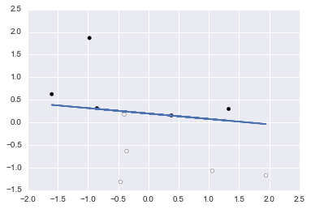
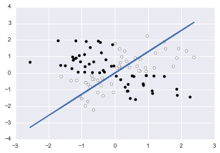
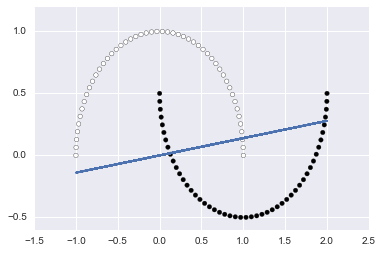
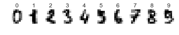
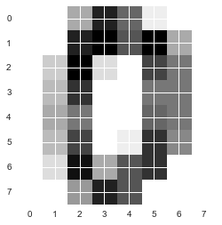
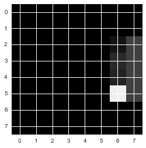
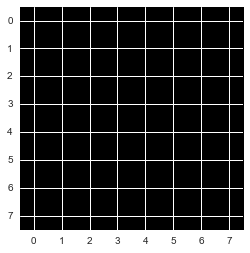
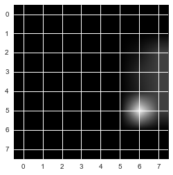

In [39]:
import numpy as np
import matplotlib.pyplot as plt
import seaborn as sns
%matplotlib inline
from sklearn import datasets
In [273]:
"""
x: 特徴量＋バイアス項(すべてのレコードで一定)
y: 教師データ
x: 重み(特徴量の個数のベクトル)
eta: 学習係数、学習率
"""
In [290]:
bias = 1
eta = 0.1
train_x = np.c_[X, np.repeat(bias, 100)]
train_y = (Y>5).astype(int)
weight = np.zeros(train_x.shape[1])
In [180]:
train_x[:5]
Out[180]:
array([[ 1.05445173, -1.07075262, 1. ],
[-0.36274117, -0.63432209, 1. ],
[-0.85409574, 0.3130677 , 1. ],
[ 1.3263859 , 0.29823817, 1. ],
[-0.4615846 , -1.31590741, 1. ]])
In [181]:
train_y
Out[181]:
array([0, 0, 1, 1, 0, 0, 1, 0, 1, 1, 0, 0, 0, 1, 0, 1, 0, 1, 1, 0, 0, 1, 0,
0, 0, 0, 0, 0, 1, 0, 0, 0, 0, 1, 0, 0, 1, 1, 1, 1, 1, 0, 1, 1, 1, 0,
1, 1, 0, 1, 0, 0, 0, 0, 1, 1, 0, 1, 0, 1, 0, 0, 0, 0, 1, 0, 1, 1, 1,
0, 1, 1, 0, 1, 1, 1, 0, 0, 1, 1, 0, 1, 0, 0, 1, 1, 0, 0, 1, 0, 1, 0,
1, 1, 0, 1, 1, 1, 0, 0])
In [182]:
def step(y):
"""活性化関数?"""
return 1 if y > 0 else 0
In [183]:
def feedforward(i, w):
"""出力関数
特徴量と重みの内積に活性化関数を適用する
内積はnumpyを頼る
"""
return step(np.dot(i, w))
In [184]:
def train(w, i, y, eta):
"""すべての特徴量にかける重みを更新
今回は出力が0/1の二値
損失関数・誤差関数にかけて、誤差があるなら(1-0, 0-1の場合)、
特徴量に誤差と学習率をかけて重みを調整する
"""
o = feedforward(i, w)
for j in range(len(w)):
w[j] = w[j] + (y - o) * i[j] * eta
return w
In [185]:
"""学習を繰り返す"""
# 繰り返し回数
epoch = 100
for i in range(epoch):
for x, y in zip(train_x, train_y):
weight = train(weight, x, y, eta)
In [311]:
# ax1+bx2+c = 0
# x2 = -(a/b)x1 -(c/b)
x2 = -weight[0]/weight[1] * X[:, 0] -(weight[2]/weight[1])
plt.plot(X[:,0], x2)
plt.scatter(X[:, 0], X[:, 1], c=Y>5)
Out[311]:
<matplotlib.collections.PathCollection at 0x1216c4860>

In [286]:
weight
Out[286]:
array([ 0.33486568, 1.04012668, -0.1 ])
In [287]:
[
step(np.dot(np.array([1, -2, 1]), weight)),
step(np.dot(np.array([-1, 2, 1]), weight)),
step(np.dot(np.array([1, 0, 1]), weight)),
]
Out[287]:
[0, 1, 1]
In [326]:
import matplotlib.pyplot as plt
import seaborn as sns
from sklearn import datasets
import ipywidgets
%matplotlib inline
def f(X, Y):
@ipywidgets.interact(
etas={'0.01': 0.01, '0.1': 0.1, '0.5': 0.5},
with_bias=True,
epoch=(1, 100, 1),
end=(2,100, 2)
)
def plot(etas=0.1, with_bias=True, epoch=100, end=100):
#bias = 1
#eta = 0.1
#train_x = np.c_[X, np.repeat(bias, 100)]
#train_y = Y
bias = 1 * with_bias
eta = etas
train_x = np.c_[X, np.repeat(bias, len(X))][:end]
train_y = Y[:end]
weight = np.zeros(train_x.shape[1])
for i in range(epoch):
for x, y in zip(train_x, train_y):
weight = train(weight, x, y, eta)
# ax1+bx2+c = 0
# x2 = -(a/b)x1 -(c/b)
x2 = -weight[0]/weight[1] * train_x[:, 0] -(weight[2]/weight[1])
plt.plot(train_x[:,0], x2)
plt.scatter(train_x[:, 0], train_x[:, 1], c=train_y)
return plot
In [327]:
# Generate a random regression problem.
X, Y = datasets.make_regression(
n_samples=100, n_features=2, n_informative=2, n_targets=1,
bias=0.0, effective_rank=None, tail_strength=0.5, noise=1.0, shuffle=True, coef=False, random_state=0)
f(X, Y > 5)()

In [332]:
# Generate isotropic Gaussian blobs for clustering.
# datasets.make_blobs([n_samples, n_features, ...])
X_b, Y_b = datasets.make_blobs(
n_samples=100, n_features=2, centers=2, cluster_std=1.0,
center_box=(-10.0, 10.0), shuffle=True, random_state=100)
plt.scatter(X_b[:, 0], X_b[:, 1], c=Y_b, cmap=plt.cm.Paired)
f(X_b, Y_b)()

In [329]:
# http://scikit-learn.org/dev/auto_examples/gaussian_process/plot_gpc_xor.html
rng = np.random.RandomState(0)
X_xor = rng.randn(200, 2)
Y_xor = np.logical_xor(X_xor[:, 0] > 0, X_xor[:, 1] > 0)
f(X_xor, Y_xor)()

In [330]:
# Make a large circle containing a smaller circle in 2d.
X_circle, Y_circle = datasets.make_circles(n_samples=100, shuffle=True, noise=None, random_state=None, factor=0.8)
plt.scatter(X_circle[:, 0], X_circle[:, 1], c=Y_circle, cmap=plt.cm.Paired)
f(X_circle, Y_circle)()

In [331]:
# Make two interleaving half circles
X_moons, Y_moons = datasets.make_moons(n_samples=100, shuffle=True, noise=None, random_state=None)
plt.scatter(X_moons[:, 0], X_moons[:, 1], c=Y_moons, cmap=plt.cm.Paired)
f(X_moons, Y_moons)()

In [270]:
%matplotlib inline
import matplotlib.pyplot as plt
import numpy as np
from matplotlib import animation as ani
import seaborn as sns
num_frame = 80.
x_range= 7
def animate(nframe):
# global num_frame
plt.clf()
a = ((5*nframe/num_frame) -.5) * np.pi
x = np.linspace(-x_range, x_range, 200)
y = np.sin(x+a)
plt.xlim(-x_range, x_range)
plt.ylim(-1.1,1.1)
plt.plot(x, y, c="b")
fig = plt.figure(figsize=(12,5))
anim = ani.FuncAnimation(fig, animate, frames=int(num_frame))#, blit=True)
anim.save('anim_test.gif', writer='imagemagick', fps=5, dpi=64)

In [23]:
datasets.load_digits?
In [141]:
n_class = 10
digits = datasets.load_digits()
# https://datamicroscopes.github.io/mnist_predictions.html
type(digits)
Out[141]:
sklearn.datasets.base.Bunch
In [214]:
digits.target, digits.target.shape
Out[214]:
(array([0, 1, 2, ..., 8, 9, 8]), (1797,))
In [217]:
digits.images.shape, digits.images[:3]
Out[217]:
((1797, 8, 8), array([[[ 0., 0., 5., 13., 9., 1., 0., 0.],
[ 0., 0., 13., 15., 10., 15., 5., 0.],
[ 0., 3., 15., 2., 0., 11., 8., 0.],
[ 0., 4., 12., 0., 0., 8., 8., 0.],
[ 0., 5., 8., 0., 0., 9., 8., 0.],
[ 0., 4., 11., 0., 1., 12., 7., 0.],
[ 0., 2., 14., 5., 10., 12., 0., 0.],
[ 0., 0., 6., 13., 10., 0., 0., 0.]],
[[ 0., 0., 0., 12., 13., 5., 0., 0.],
[ 0., 0., 0., 11., 16., 9., 0., 0.],
[ 0., 0., 3., 15., 16., 6., 0., 0.],
[ 0., 7., 15., 16., 16., 2., 0., 0.],
[ 0., 0., 1., 16., 16., 3., 0., 0.],
[ 0., 0., 1., 16., 16., 6., 0., 0.],
[ 0., 0., 1., 16., 16., 6., 0., 0.],
[ 0., 0., 0., 11., 16., 10., 0., 0.]],
[[ 0., 0., 0., 4., 15., 12., 0., 0.],
[ 0., 0., 3., 16., 15., 14., 0., 0.],
[ 0., 0., 8., 13., 8., 16., 0., 0.],
[ 0., 0., 1., 6., 15., 11., 0., 0.],
[ 0., 1., 8., 13., 15., 1., 0., 0.],
[ 0., 9., 16., 16., 5., 0., 0., 0.],
[ 0., 3., 13., 16., 16., 11., 5., 0.],
[ 0., 0., 0., 3., 11., 16., 9., 0.]]]))
In [219]:
digits.images[0]
Out[219]:
array([[ 0., 0., 5., 13., 9., 1., 0., 0.],
[ 0., 0., 13., 15., 10., 15., 5., 0.],
[ 0., 3., 15., 2., 0., 11., 8., 0.],
[ 0., 4., 12., 0., 0., 8., 8., 0.],
[ 0., 5., 8., 0., 0., 9., 8., 0.],
[ 0., 4., 11., 0., 1., 12., 7., 0.],
[ 0., 2., 14., 5., 10., 12., 0., 0.],
[ 0., 0., 6., 13., 10., 0., 0., 0.]])
In [269]:
for index, (image, label) in enumerate(zip(digits.images[:10], digits.target[:10])):
plt.subplot(1, 10, index + 1)
plt.axis('off')
plt.imshow(image, cmap=plt.cm.gray_r, interpolation='nearest')
plt.title('%i' % label)

In [239]:
plt.imshow(digits.images[0], cmap=plt.cm.gray_r, interpolation='nearest')
Out[239]:
<matplotlib.image.AxesImage at 0x11e87f668>

In [240]:
plt.imshow(digits.images[0], cmap=plt.cm.gray_r)
Out[240]:
<matplotlib.image.AxesImage at 0x11e9a29b0>
In [24]:
import PIL
In [222]:
PIL.Image.fromarray?
# http://pillow.readthedocs.io/en/3.2.x/handbook/concepts.html#modes
In [242]:
img = PIL.Image.fromarray(digits.images[0], mode="L")
img
Out[242]:

In [227]:
plt.imshow(img)
Out[227]:
<matplotlib.image.AxesImage at 0x11cde9160>

In [243]:
img.show()
In [265]:
_img = PIL.Image.fromarray(digits.images[0], mode="1")
plt.imshow(_img, cmap=plt.cm.gray_r)
Out[265]:
<matplotlib.image.AxesImage at 0x124279748>

In [236]:
plt.imshow(img, cmap=plt.cm.gray_r, interpolation='nearest')
Out[236]:
<matplotlib.image.AxesImage at 0x11e588a20>

In [238]:
plt.imshow(img, cmap=plt.cm.binary)#, interpolation='nearest')
Out[238]:
<matplotlib.image.AxesImage at 0x11e755fd0>

In [232]:
import PIL.ImageOps
plt.imshow(PIL.ImageOps.grayscale(img))
Out[232]:
<matplotlib.image.AxesImage at 0x11d64c2e8>

In [228]:
img = PIL.Image.fromarray(digits.images[0], mode="1")
plt.imshow(img)
Out[228]:
<matplotlib.image.AxesImage at 0x11cf0d080>

In [229]:
img = PIL.Image.fromarray(digits.images[0], mode="P")
plt.imshow(img)
Out[229]:
<matplotlib.image.AxesImage at 0x11dd05ba8>
